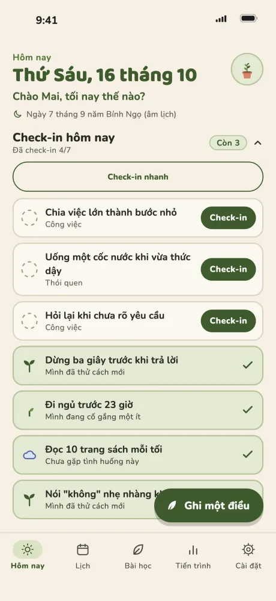
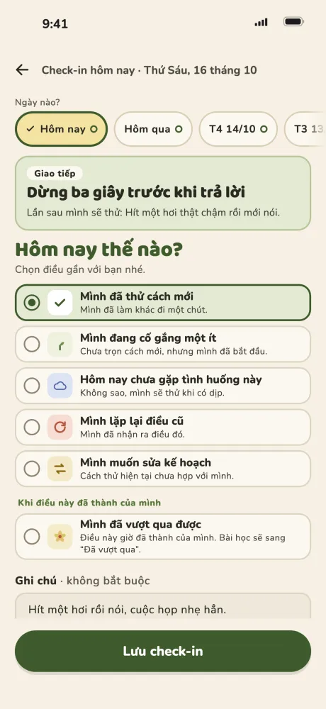
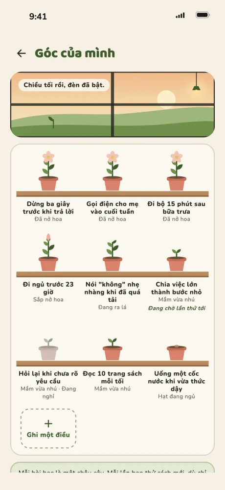
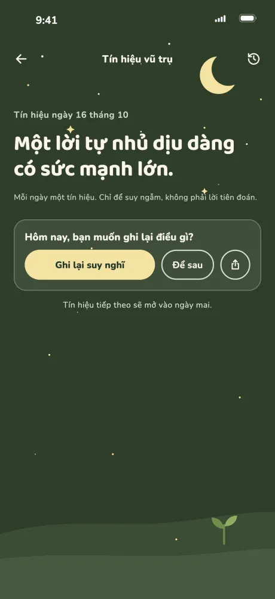
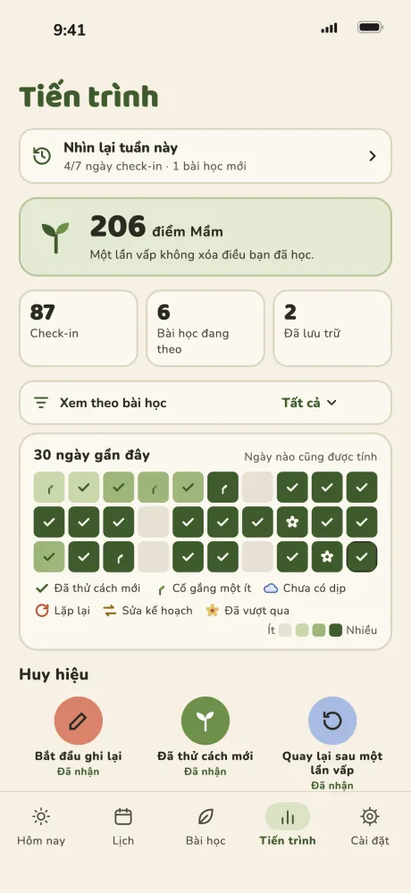
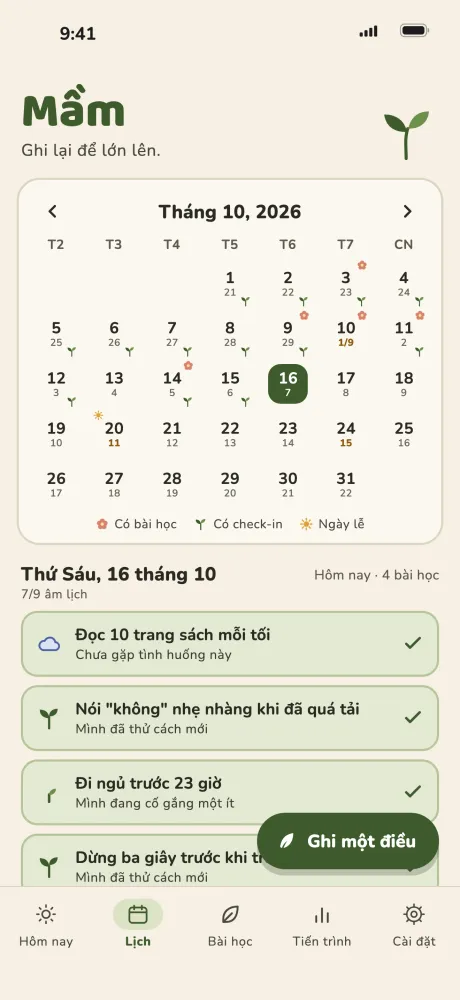
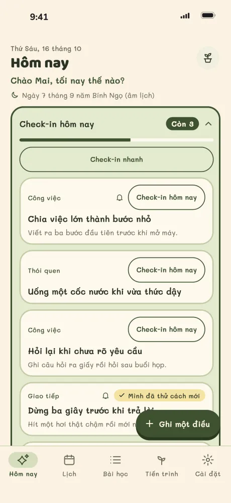
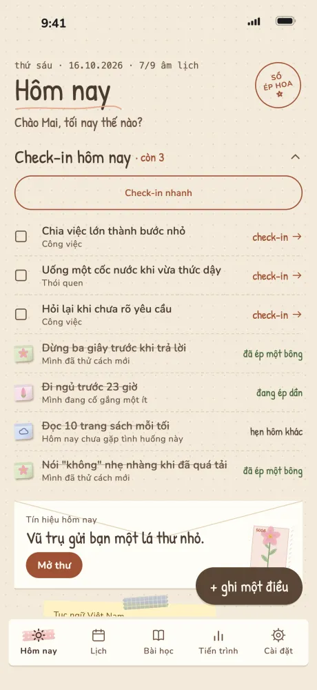
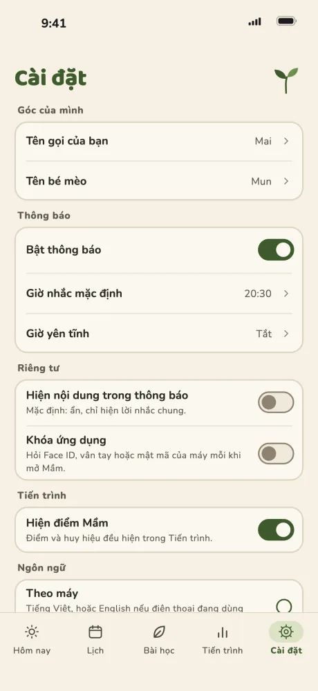

Ghi lại bài học
Chuyện gì đã xảy ra, điều mình rút ra, và một câu cho lần tới: “Lần sau mình sẽ thử…” Chỉ cần tiêu đề là đủ, phần còn lại viết khi muốn.
Nhật ký từng bước nhỏ, cho iPhone
Ghi lại để lớn lên, từng chút một.
Một cuốn sổ nhỏ để ghi lại điều bạn muốn thay đổi và những bài học rút ra từ cuộc sống, rồi nhẹ nhàng nhắc mình thử một cách khác. Không chuỗi ngày, không trách móc, không tài khoản.
Miễn phí. Sắp có trên App Store.

Thay đổi thường đến từ những lần thử rất nhỏ. Mầm giữ chúng lại cho bạn, và không bao giờ lấy đi điều bạn đã học.
Chuyện gì đã xảy ra, điều mình rút ra, và một câu cho lần tới: “Lần sau mình sẽ thử…” Chỉ cần tiêu đề là đủ, phần còn lại viết khi muốn.
Nhắc riêng cho từng bài học, có giờ yên tĩnh. Mặc định thông báo không hiện nội dung bài học. Giữ lâu thông báo để check-in mà không cần mở app.
“Mình đã thử cách mới”, “Mình đang cố gắng một ít”, “Hôm nay chưa gặp tình huống này”, “Mình lặp lại điều cũ”… Lặp lại điều cũ cũng là một lần check-in đáng ghi nhận. Điểm Mầm chỉ tăng, không bao giờ bị trừ.
Mỗi bài học là một chậu cây, lớn dần qua mỗi lần bạn thử cách mới: từ hạt đang ngủ đến lúc nở hoa. Cây không bao giờ héo.
Ngày dương và âm lịch, một lời chào, các bài học chờ check-in, một tín hiệu vũ trụ, câu ca dao hay quote của ngày và một mẹo nhỏ.
Lịch tháng có âm lịch và ngày lễ Việt Nam, tiến trình với huy hiệu, 30 ngày gần đây và “Nhìn lại tuần”.
Ba cỡ widget hiện ngày, tín hiệu, câu hay và số lời nhắc hôm nay. Widget không bao giờ hiện tên bài học.
Ba chủ đề: Đồi cỏ, Mèo đen (có bé mèo do bạn đặt tên) và Sổ ép hoa. Chế độ tối, chữ lớn, tiếng Việt và tiếng Anh. Mỗi màn có hướng dẫn ngắn, xem lại được trong Cài đặt.
Tắt sẵn. Khi bạn bật và chạm “Đồng bộ ngay”, Mầm gộp sổ trên máy với bản sao trong iCloud của chính bạn, để các máy của bạn giống nhau. Không tự đồng bộ ngầm, không có máy chủ nào của Mầm ở giữa.
Vài giây mỗi ngày là đủ.
Một thói quen muốn đổi hay một bài học vừa rút ra, kèm điều lần sau mình sẽ thử.
Chọn giờ và ngày nhắc. Mầm nhắc nhẹ, tránh giờ yên tĩnh của bạn.
Trên Hôm nay, bằng “Check-in nhanh” cho mọi bài học đang chờ, hoặc ngay từ thông báo. Quên một ngày thì check-in bù sau.
Cây trong Góc của mình lớn dần, điểm Mầm tăng lên, và lịch giữ lại từng ngày bạn đã đi qua.
Vuốt ngang để xem thêm.








Những điều bạn ghi trong Mầm là của bạn. Dữ liệu ở trên máy của bạn.
Mầm miễn phí, không quảng cáo và không có mua thêm trong ứng dụng.
Hiện Mầm dành cho iPhone. Chưa có bản Android.
Không sao cả. Mầm không đếm chuỗi ngày và không trừ điểm. Bạn có thể check-in bù cho những ngày trước, hoặc cứ tiếp tục từ hôm nay.
Trong Cài đặt → Dữ liệu của bạn, chọn Xuất dữ liệu để có một file sao lưu, rồi Nhập dữ liệu trên máy mới. Mầm kiểm tra cả file và hỏi bạn muốn gộp hay thay thế trước khi ghi.
Hoặc bật đồng bộ iCloud trên cả hai máy (cùng tài khoản iCloud) rồi chạm “Đồng bộ ngay” trên máy cũ trước, máy mới sau.
Không. Mầm là nơi ghi lại và nhắc nhở cá nhân, không thay thế cho tư vấn y tế hay tâm lý. Mục “Cần hỗ trợ?” trong Cài đặt có số điện thoại khẩn cấp tại Việt Nam.
Có. Mầm có tiếng Việt và tiếng Anh, đổi được trong Cài đặt.